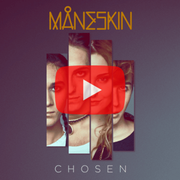

Todo lo que deseas conocer
Historia
2015-2016: formación
Los inicios de la banda se remontan hacia mediados de 2015 en Roma (Italia), cuando Damiano David, Victoria De Angelis y Thomas Raggi, quienes se conocieron en la secundaria, tenían en mente la idea de dedicarse formalmente a la música.
Como aún les faltaba un baterista, publicaron un anuncio a través de Facebook que llamó la atención de Ethan Torchio, un joven que vivía en Frosinone y al que finalmente reclutaron tras quedar impresionados por su audición.
La banda tenía intenciones de participar en The Pulse Contest 2016, un concurso realizado en Roma para bandas emergentes, pero uno de los requisitos era tener un nombre registrado.
Durante una lluvia de ideas, los demás miembros le pidieron a De Angelis, quien es de ascendencia danesa, que dijera palabras aleatorias en danés, hasta que finalmente se decidieron por «Måneskin» (que en danés significa «luz de la luna»), aunque su significado no tenía relación alguna con su imagen o su música
Tras registrarse formalmente, la banda ganó el concurso y tuvo la oportunidad de tocar en varios festivales locales.
A partir de este punto, Måneskin comenzó a escribir sus primeras canciones originales y posteriormente empezó a interpretarlas en las calles de Roma hasta que sus integrantes viajaron a Dinamarca para trabajar en un sonido más cohesivo y ensayar sus actuaciones.
2017-2019: The X Factor y Il ballo della vita
En 2017, Måneskin participó en la undécima temporada de la versión italiana del programa de talentos The X Factor, bajo la tutela de Afterhours.
La banda logró gran popularidad a lo largo del concurso y versionó temas como «Let's Get It Started» de Black Eyed Peas, «Somebody Told Me» de The Killers y «Beggin'» de The Four Seasons, así como su primer sencillo titulado «Chosen», que posteriormente alcanzó la segunda posición en la lista semanal de éxitos de Italia y recibió múltiples discos de platino.
Finalmente, la banda quedó en segundo lugar, detrás de Lorenzo Licitra, pero aun así firmó un contrato discográfico con Sony Music para la publicación de un EP titulado Chosen, que fue lanzado en diciembre de 2017 e incluyó varias de las versiones interpretadas en el programa. El disco alcanzó la tercera posición en la lista de los más vendidos en Italia y también fue certificado con múltiples discos de platino.
En marzo de 2018, publicó su siguiente sencillo, «Morirò da re», su primer tema en italiano que también logró la segunda posición en Italia y múltiples discos de platino.
A este le siguió «Torna a casa», que se convirtió en su primer tema en alcanzar el puesto número 1 en su país natal e igualmente recibió varios discos de platino.
En octubre de 2018, fue lanzado su primer álbum de estudio titulado Il ballo della vita, que debutó en el primer lugar de la lista semanal de álbumes más vendidos en Italia y después ubicó el quinto lugar de los más vendidos en el año.
Simultáneamente con el lanzamiento del álbum, fue publicado un documental titulado This Is Måneskin, que mostró el proceso de grabación de las canciones y un vistazo a la vida privada de los integrantes de la banda.
Posteriormente fueron lanzados como sencillos «L'altra dimensione» y «Le parole lontane», que también ingresaron al top 10 del listado italiano de éxitos semanales y obtuvieron la certificación de platino. Para seguir promocionando el disco, la banda inició una gira por Europa que visitó países como Alemania, Bélgica, España, Francia y el Reino Unido, para la que se agotaron un total de 70 conciertos y se vendieron cerca de 140 mil entradas.
2020-presente: Teatro d'ira: Vol. I y Eurovisión
Tras culminar con la gira de Il ballo della vita, la banda se estableció en Londres (Reino Unido) para trabajar en un nuevo estilo musical.
En octubre de 2020, publicó su sencillo «Vent'anni», que alcanzó la duodécima posición en Italia y logró varios discos de platino.
En marzo de 2021, ganó el Festival de la Canción de San Remo con el tema «Zitti e buoni»; dicha victoria fue una sorpresa entre la prensa italiana, ya que históricamente las canciones de rock no habían prosperado en el concurso. A ello le siguió el lanzamiento de su segundo álbum de estudio, Teatro d'ira: Vol. I, que debutó en el primer lugar en Italia y logró múltiples discos de platino.
Como ganadores del Festival de la Canción de San Remo, Måneskin representó a Italia con «Zitti e buoni» en el Festival de la Canción de Eurovisión 2021, celebrado en Róterdam (Países Bajos). Durante la final llevada a cabo el 22 de mayo, la banda ganó el concurso tras recibir un total de 524 puntos, lo que supuso la tercera victoria para Italia.
Asimismo, fue la primera banda y la primera canción de rock en ganar desde la victoria de Lordi en 2006 con «Hard Rock Hallelujah».
Su actuación fue ampliamente elogiada por la prensa y su triunfo catapultó la carrera de la banda a nivel global; «Zitti e buoni» alcanzó el número 1 en Finlandia, Grecia, Lituania, los Países Bajos, Polonia y Suecia, así como el top 10 en Alemania, Austria, Bélgica, Noruega, Portugal y Suiza, además del top 20 en España y el Reino Unido.
La victoria de Måneskin en Eurovisión provocó que su música alcanzara gran popularidad fuera de Italia; su álbum Il ballo della vita, que para entonces solo había entrado al conteo italiano, alcanzó el top 10 en Croacia, Finlandia, los Países Bajos y Polonia dos años después de su lanzamiento.
Por su parte, Teatro d'ira: Vol. I se disparó hasta la primera posición en Finlandia, Lituania y Suecia, además de entrar al top 10 en Austria, España, Grecia, Noruega, entre otros. Su versión del tema «Beggin'», lanzada en 2017, se viralizó a través de TikTok y alcanzó el número 1 en Alemania, Austria, Grecia, los Países Bajos y Suiza, así como el número 3 en Australia, Irlanda y Nueva Zelanda, el número 6 en el Reino Unido y el número 15 en los Estados Unidos.
El éxito de la canción provocó además que Chosen entrara al top 10 de varios países de Europa, además de alcanzar el puesto 21 en Canadá y el 103 en los Estados Unidos.
Su primer tema publicado tras Eurovisión, «I Wanna Be Your Slave», alcanzó la quinta posición en el Reino Unido, lo que la convirtió en su canción mejor posicionada en el país y también en la primera banda italiana en llegar al top 5 del UK Singles Chart, convirtiendo a la banda en los primeros ganadores de Eurovisión desde Céline Dion en tener dos canciones en el top 40 del Reino Unido, y un éxito entre los 10 primeros con una canción fuera del concurso. La canción también gozó de éxito en otros países como Alemania, Austria, Dinamarca e Irlanda, donde igualmente ingresó a los diez primeros. Tras ello, la banda inició una gira por Europa donde cantó en festivales como Rock for People y Nova Rock Festival. En octubre, fue lanzado su décimo sencillo, «Mammamia», que alcanzó la sexta posición en Italia.
Ese mismo mes, la banda hizo su debut en la televisión estadounidense con una aparición en el programa The Tonight Show Starring Jimmy Fallon para cantar «Beggin'» y «Mammamia». En noviembre, la banda se presentó en The Ellen DeGeneres Show, en los MTV Europe Music Awards para cantar «Mammamia» (donde recibieron el premio al mejor grupo, lo que la convirtió en el primer artista de Italia en ganar una categoría general) y en los American Music Awards. Durante este período, también realizaron un concierto con entradas agotadas en Londres y Estados Unidos, y abrieron para los Rolling Stones en el Allegiant Stadium de Las Vegas.
El 22 de enero de 2022, fueron invitados al Saturday Night Live.
Se anunció que se estaba trabajando en un nuevo álbum de estudio, junto con una gira por Europa que luego se ampliaron para cubrir también Norteamérica, Sudamérica y Japón. Las giras comenzarán en septiembre de 2022 en São Paulo y concluirán en mayo de 2023 en Tallin, con fechas adicionales en agosto de 2022 en Tokio y Osaka.
Un nuevo sencillo de la banda, «Supermodel», se lanzó el 13 de mayo de 2022 y se interpretó en la final del Festival de la Canción de Eurovisión 2022, celebrada Turín al día siguiente.
También realizaron una breve interpretación de «If I Can Dream», que luego se incluyó en la banda sonora de la película Elvis. «Supermodel» también se presentó en The Tonight Show Starring Jimmy Fallon el 20 de mayo, y en los MTV Video Music Awards de 2022 (donde la banda recibió tres nominaciones y ganó una, en la categoría de mejor video alternativo por «I Wanna Be Your Slave») el 28 de agosto de ese año.
Miembros

De izquierda a derecha: Ethan Torchio, Victoria De Angelis, Damiano David y Thomas Raggi
- Damiano David (Roma, 8 de enero de 1999) — vocalista
- Victoria De Angelis (Roma, 25 de agosto de 1999) — bajista
- Thomas Raggi (Roma, 10 de agosto de 2001) — guitarrista
- Ethan Torchio (Roma, 8 de diciembre de 2000) — baterista
Estilo musical e influencias
Måneskin ha sido descrita como una fusión entre pop rock, rock alternativo, glam rock y hard rock, generalmente comparada con el rock de los años 1970 tanto en sonido como estética.787980 Su primer álbum, Il ballo della vita (2018), incorporó sonidos mayormente pop rock con estilo funk, mientras que su segundo álbum, Teatro d'ira: Vol. I (2021), estuvo más enfocado al hard rock.8182 Según Damiano David, la banda es «una transición entre la música del pasado hacia la modernidad».83 La banda ha citado como influencia e inspiración a Led Zeppelin, Fleetwood Mac, Nirvana, Radiohead, Franz Ferdinand, David Bowie, Gentle Giant, Rolling Stones, The Doors, Arctic Monkeys, Red Hot Chili Peppers, Harry Styles, Bruno Mars, R.E.M., Marlene Kuntz, Verdena, Queen y Afterhours.
Su estilo, carácter y apariencia, que mezclan características del rock con rasgos de moda italianos, ha llamado poderosamente la atención, sobre todo en públicos jóvenes.
Discografía
Álbumes de estudio
- Il ballo della vita (2018)
- Teatro d'ira: Vol. I (2021)
- Rush! (2023)
EP
- Chosen (2017)
- 
Filmografía
- This is Måneskin. Documental (2018). Se interpretan a ellos mismos.